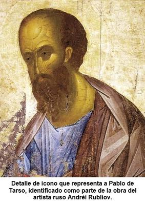

Sin duda alguna la figura de Saulo de Tarso —rebautizado como «el apóstol san Pablo»— es absolutamente central para el cristianismo, hasta el punto de que resulta difícil imaginar la religión cristiana sin su aporte. A él se le atribuye la autoría de aproximadamente una cuarta parte del Nuevo Testamento, y, más importante aún, de los escritos más antiguos que lo componen. Sí, las epístolas paulinas preceden cronológicamente a los evangelios, y constituyen la primera interpretación teológica sistemática del significado de Jesús, de su crucifixión y su supuesta resurrección. En tal sentido Pablo —si existió realmente, lo cual no ha podido confirmarse— no fue simplemente un transmisor del mensaje cristiano primitivo, sino su primer gran teólogo y arquitecto doctrinal.


De hecho, la teología desarrollada por Pablo es el eje central sobre el cual gira el cristianismo posterior: la idea de la salvación por la fe, el papel redentor de la crucifixión, el pecado heredado, la oposición entre «carne» y «espíritu», y la universalización del mensaje cristiano más allá del judaísmo. Incluso muchas de las creencias que hoy se consideran esenciales al cristianismo no provienen directamente de palabras atribuidas a Jesús en los evangelios, sino de la interpretación que Pablo hizo de su figura. Por tanto, Pablo puede ser considerado el verdadero fundador intelectual del cristianismo tal como se conoce, ya que, sin sus cartas y su teología, este movimiento en torno a Jesús probablemente habría quedado como una secta judía menor, perdida en la historia del siglo I.
A tal grado de importancia llegan las epístolas de Pablo, que para el cristianismo no son simples cartas de un predicador antiguo, sino nada menos que la misma «palabra de Dios». Es decir, que las opiniones, prejuicios y obsesiones de un varón judío del siglo I, nacido en un entorno primitivo y profundamente patriarcal, fueron elevadas al rango de verdad eterna y universal, como provenientes del Creador del universo. Y el resultado es un monumento literario a la limitada mentalidad de su época, presentado hoy como revelación divina.
Sin embargo, Pablo fue sólo un hombre del Oriente Medio antiguo, formado en una cultura que ahora nos puede resultar arcaica y obsoleta, por lo que sus enseñanzas tampoco podían trascender esos límites. Se trata de una cultura patriarcal, donde la mujer era considerada jurídicamente inferior, la jerarquía masculina era incuestionable, y la cosmología estaba plagada de mitos. Por lo que pretender que sus ideas sobre el género, el cuerpo y el «orden natural» son dictadas por una divinidad universal, resulta absurdo y totalmente desproporcionado.
Veamos algunas de sus «perlas de sabiduría»:
1. El hombre sobre la mujer… y «Dios» sobre «Cristo»
«Cristo es la cabeza de todo varón, y el varón es la cabeza de la mujer, y Dios la cabeza de Cristo.» (1 Corintios 11:3)
En primer lugar, señalemos que Pablo comienza en el Nuevo Testamento a referirse a Jesús de Nazaret sólo como «Cristo» (del latín Christus, y éste del griego bíblico Χριστός, Christós), que es una traducción del término hebreo «Mesías» (מָשִׁיחַ, Māšîaḥ), que significa «ungido», un título o epíteto utilizado en la Biblia para consagrar o designar a personajes elegidos por «Dios» para misiones especiales, principalmente al salvador esperado por el judaísmo. Y esto es porque Pablo ya no ve a Jesús en su dimensión humana, sino como un personaje divinizado. Asimismo, cuando dice «Dios» no se refiere propiamente a Yahvé, la divinidad tribal judaica, sino a un dios de alcance universal.
Y para Pablo existe una pirámide perfecta de poder: «Dios» → «Cristo» → hombre → mujer. Un esquema jerárquico típico de sociedades autoritarias, proyectado al cielo y luego devuelto a la Tierra con sello divino. Donde la mujer queda reducida a un eslabón inferior, subordinada «por diseño».
Lo irónico es que esta jerarquía complica aún más la ya confusa doctrina de la Trinidad: si «Cristo» es «Dios», ¿cómo puede «Dios» ser «cabeza» de sí mismo? Pero más allá del embrollo teológico, el mensaje social es claro: obediencia vertical y desigualdad sacralizada. Un patriarca del siglo I hablando como patriarca del siglo I… sólo que ahora con aureola.
2. El velo, la vergüenza y la «gloria del varón»
También escribe Pablo: «…si le es vergonzoso a la mujer cortarse el cabello o raparse, que se cubra. Porque el varón no debe cubrirse la cabeza, pues él es imagen y gloria de Dios; pero la mujer es gloria del varón.» (1 Corintios 11:6-7)
Aquí no sólo subordina a la mujer, sino que la convierte en objeto decorativo del hombre: él es «imagen y gloria de Dios»; ella, «gloria del varón». Es decir, un reflejo secundario del reflejo. Copia de copia.
Y dicta normas estéticas con pretensión divina: si la mujer no se cubre, que se rape; si raparse es vergonzoso, que se cubra. Un razonamiento digno de un código tribal, no de una mente que supuestamente habla en nombre del creador de las galaxias.
Lo curioso es que hoy casi ninguna cristiana usa velo en las iglesias occidentales. El mandato «divino» se volvió culturalmente incómodo, así que se archiva en silencio. «Palabra de Dios»… versión opcional.
3. La mujer «creada por causa del hombre»
Manifiesta Pablo: «Porque el varón no procede de la mujer, sino la mujer del varón, y tampoco el varón fue creado por causa de la mujer, sino la mujer por causa del varón». (1 Corintios 11:8-9)
Aquí recicla sin pudor el mito del Génesis: Eva como derivado utilitario de Adán. No una persona autónoma, sino un complemento funcional. Aunque luego reconoce que «también el varón nace de la mujer», remata con un comodín teológico: «todo procede de Dios». (1 Corintios 11:12). Traducción: no importa la contradicción, la autoridad queda intacta.
Obviamente, desde la biología moderna esto roza lo absurdo: sin útero no hay humanidad. Pero para la mentalidad mítica, la realidad debe adaptarse al relato, no al revés.
4. El «orden natural» del cabello
Y remata diciendo Pablo: «La naturaleza misma ¿no os enseña que al varón le es deshonroso dejarse crecer el cabello? Por el contrario, a la mujer dejarse crecer el cabello le es honroso; porque en lugar de velo le es dado el cabello.» (1 Corintios 11:14-15)
Lo que resulta divertido, porque si Jesús era un judío del siglo I, lo más probable es que usara el cabello largo (de forma «deshonrosa»), como muchos hombres de su tiempo. Y así se muestra en las imágenes que lo representan y que han llegado hasta nosotros.
Pero al margen de esto, observemos que Pablo apela a «la naturaleza» para justificar una simple convención cultural grecorromana: hombres con pelo corto, mujeres con pelo largo. Y lo presenta como ley biológica universal, cuando no es más que una moda histórica.
Pero la ironía es evidente: si al hombre le crece el cabello, es porque eso es natural. Y si el cabello de la mujer ya funciona como «velo», ¿para qué otro velo encima? La lógica se enreda en sí misma, pero la afirmación se mantiene porque no se basa en evidencia, sino en autoridad.
Pero lo más revelador no es sólo lo que Pablo dijo, sino lo que los cristianos hacen con lo que dijo: ellos no se cubren la cabeza, ni predican la subordinación femenina de forma tan explícita, ni imponen normas capilares como mandatos divinos. Ellos seleccionan. Editan. Suavizan. Modernizan. Es decir, aplican exactamente el mismo criterio que dicen no usar: el criterio humano.
En fin, Pablo fue solamente un hombre de su tiempo, con los prejuicios de su tiempo, hablando para comunidades de su tiempo. Su palabra no fue la palabra de ningún «Dios». Por lo que convertir sus opiniones en decretos eternos de un ser omnisciente, es un ejercicio de anacronismo intelectual y de sumisión cultural. Y luego, para colmo, obedecerlas sólo cuando conviene.
El «apóstol inspirado» queda entonces al descubierto como lo que fue: un predicador antiguo, atrapado en una visión patriarcal del mundo, cuyos textos sobreviven hoy no por su profundidad universal, sino porque una institución los declaró sagrados. Aunque cuando resultan incómodos… se los ignora convenientemente. «Palabra de Dios»… sí, pero con tijeras.
[Godless Freeman]
Comentarios
Comments powered by Disqus